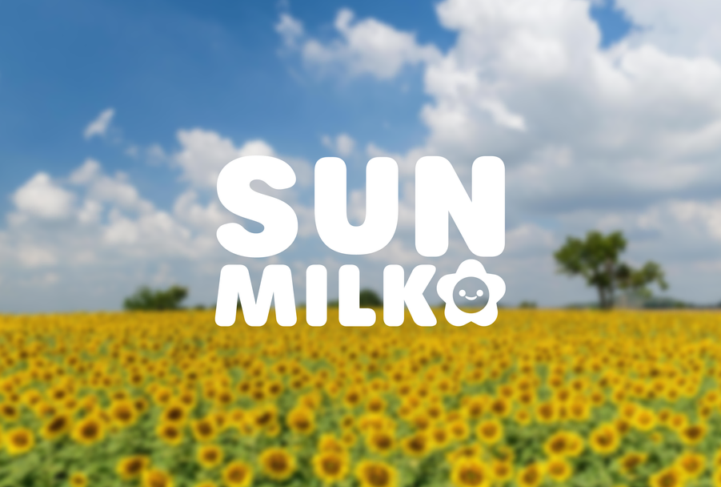
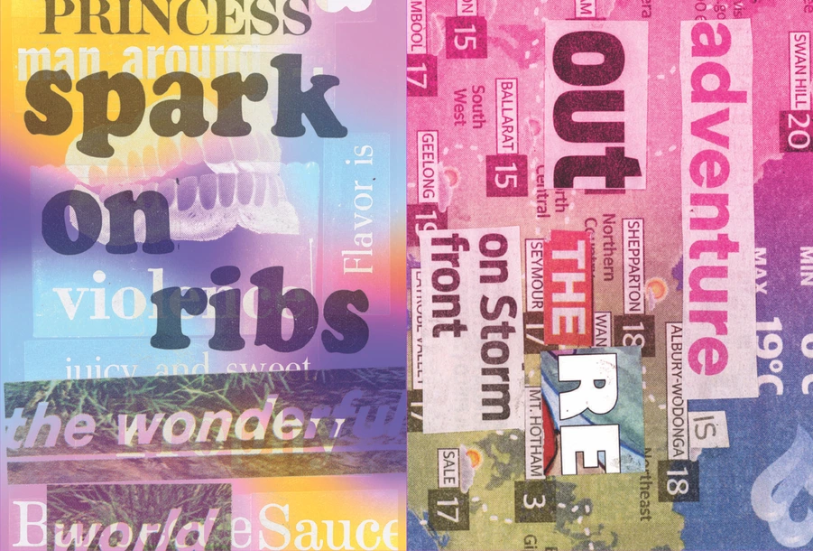
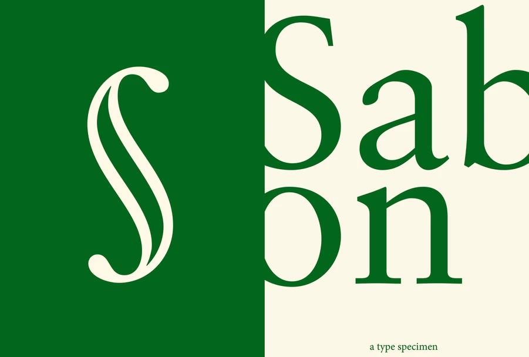
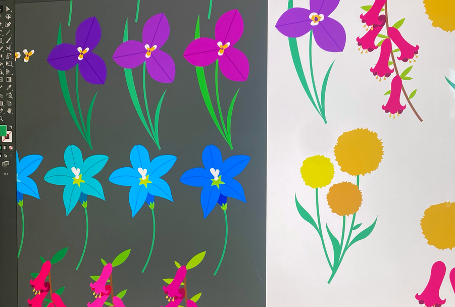

Tender
Self initiated project. A curated collection of queer artworks
through history with a focus on positive themes of desire, curiosity
& pleasure.
Book Design, Typography
Full project →

Sunmilk
Branding & packaging of a fictional milk product—Sunmilk. I headed
the packaging design for this collaborative project.
Branding, Packaging design
Full project →

Glam
A drunken, euphoric rave of type and colour. Experimental type and
image based zine.
Typography, Collage
Full project →
Good Times
Branding for a charming little pasta bar. Inspired by their warm &
homely interior; particularly the candles stuffed into glasses &
table drawing paper.
Branding
Full project →

Sabon
Type specimen booklet for the typeface 'Sabon' by Jan Tschichold.
Inspired by the crime genre of Penguin Books.
Typography
Full project →

Nuttshell
Work done as a Graphic Design assistant at Nuttshell Studios. In
collaboration with the studio team.
Illustration. Publication Design
Full project →